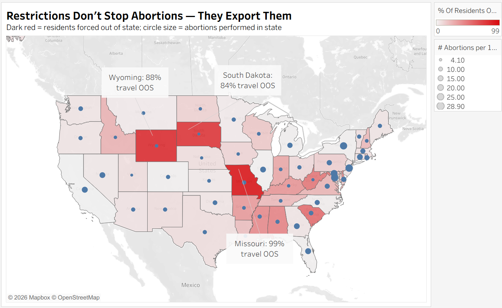
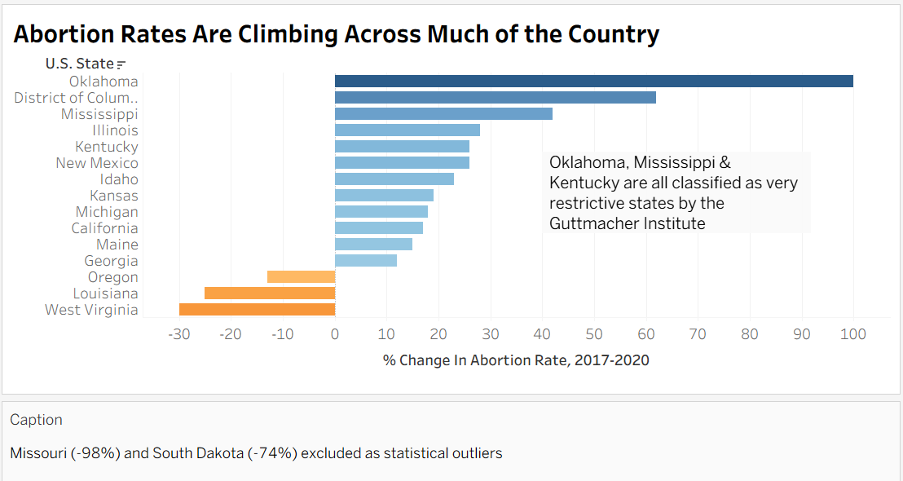

Going into this assignment I assumed the "deceptive" visualization would feel obviously wrong to make, but it actually didn't, and that was the surprising part. Most of the choices that made Visualization 2 misleading were things I could easily rationalize: excluding Missouri because it's extreme, truncating the axis because the chart "looks cleaner," framing the title assertively because that's just good communication. None of it felt like lying in the moment, which made me realize how easy it is to deceive an audience while convincing yourself you're being reasonable.
The hardest part was drawing a line between persuasion and manipulation. Both visualizations make argumentative choices, like the red color scale in Visualization 1, the annotation calling out restrictive states in Visualization 2, but some feel more defensible than others. I think the closest thing to a workable definition of ethical visualization is whether you'd be comfortable explaining every decision out loud to a skeptical reader. The Missouri exclusion in Visualization 2 doesn't pass that test, and I'd have to admit I removed it because it hurt my argument, not because it was genuinely an outlier. That feels like the real boundary, not whether a choice is technically accurate, but whether your reasoning for it holds up under scrutiny.